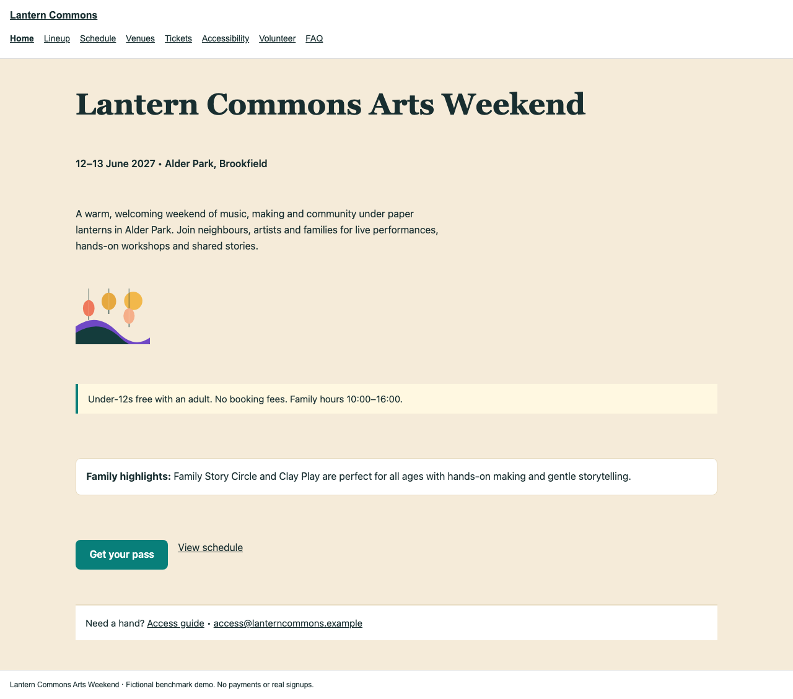
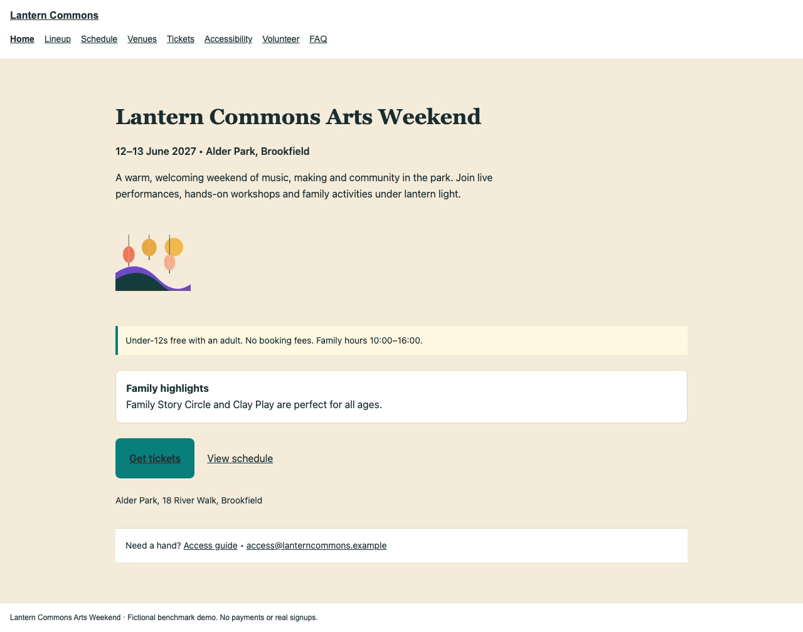
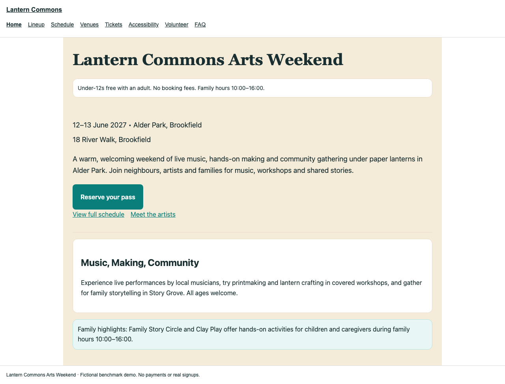

Fleet · eight agents
Final pass 418.0s · 63.4 output tok/s · Polish 60.2s · Checks 251/251
Index · Lineup · Schedule · Venues · Tickets · Accessibility · Volunteer · Faq
Full home-page screenshot

Original generated pages are shown without manual design edits. All modes used Glimmer 30B four-bit and the same three-round task. This gallery is a separate artifact browser; each site remains unchanged. Output tok/s includes reported reasoning, tools, checks and repairs. Follow the page links for full-width views.
Final pass 418.0s · 63.4 output tok/s · Polish 60.2s · Checks 251/251
Index · Lineup · Schedule · Venues · Tickets · Accessibility · Volunteer · Faq

Final pass 762.8s · 37.2 output tok/s · Polish 232.0s · Checks 251/251
Index · Lineup · Schedule · Venues · Tickets · Accessibility · Volunteer · Faq

Runner history limit; no speedup claim · Checks 219/251
Index · Lineup · Schedule · Venues · Tickets · Accessibility · Volunteer · Faq
